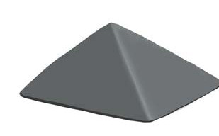
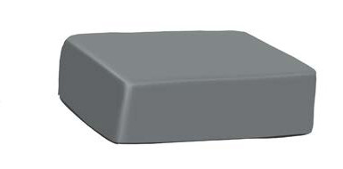
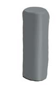

Chapter Four
Clay modelling
Introduction
Clay has various uses in many Tanzanian communities.
In this chapter, you will learn clay modelling using slab and coiling methods.
The competencies developed will enable you to model various objects and decorations.
Think
Various methods of modelling
Modelling by the slab method
This method is suitable for modelling objects with hall shapes such as pyramids, cuboids, cubes and cylinders; as shown in Figure 1.



Figure 1: Shapes modelled by slab method
Materials for clay modelling
Clay modelling needs the following materials: